In this document, we demonstrate how to solve a 1D eigenproblem (eigenvalues of the shifted 1D Laplace operator in a bounded domain) by creating custom elements. The tutorial is related to the harmonic eigenproblem , which you should read first. The fundamental difference in this case, is that we treat the eigenproblem as two coupled first-order equations which ensures that many of the eigenvalues are complex.
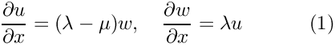 in the domain 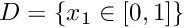, with homogeneous Dirichlet boundary conditions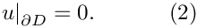 |
We shall treat  as an eigenvalue (unknown), but the other parameter
as an eigenvalue (unknown), but the other parameter  is a shift, which is used to modify the spectrum of the operator. The two first-order equations may be combined into a single second-order equation
is a shift, which is used to modify the spectrum of the operator. The two first-order equations may be combined into a single second-order equation
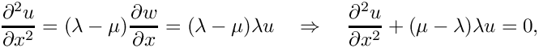
which is exactly the same equation as the harmonic eigenproblem , but with a redefinition of the eigenvalues. Hence, the exact solutions are given by the countably infinite set:
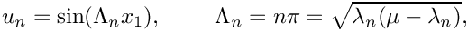
which yields
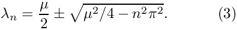
If the shift 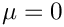, then the eigenvalues are all imaginary and consist of the complex conjugate pairs given by 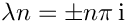.
If 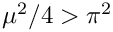 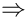 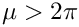, then the first complex conjugate pair of imaginary eigenvalues becomes two distinct real eigenvalues because the term under the square root in (3) becomes positive. As increases further subsequent complex eigenvalues merge to be real. Thus, we can control the spectrum by modifying the parameter .
We now provide a detailed discussion of the driver code complex_harmonic.cc which solves the problem for the first four eigenvalues, when 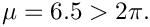
Overview of the theory
Weak formulation of the problem
If we wish to solve the problem (1) using finite elements, we simply multiply each equation by a test function, but do not integrate by parts. We shall use the same test functions for each variable and thus our governing equations become
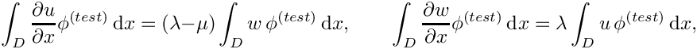
If we expand 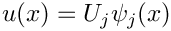 and 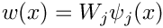 in terms of known basis functions  and use the same basis functions as our test functions (Galerkin method), then the weak form becomes
and use the same basis functions as our test functions (Galerkin method), then the weak form becomes
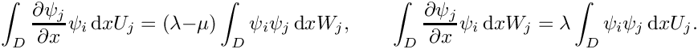
Thus, in order to form the discrete eigenproblem 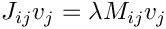, we choose to order the unknowns in the form 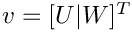, leading to the block Jacobian and mass matrices
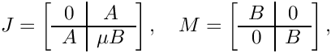
where
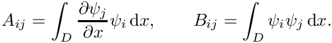
Implementation
The implementation closely follows that in the harmonic eigenproblem , and so we shall concentrate on the differences from that problem.
Creating the elements
For generality, we implement the mathematics to assemble contributions to the Jacobian and mass matrices defined above in the class ComplexHarmonicEquations that inherits from FiniteElement.
The unknowns that represent the discretised eigenfunction are assumed to be stored at the nodes, but there are now two unknowns:  is assumed to be the first and 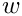 is the second.
is assumed to be the first and 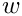 is the second.
As before, the key function is fill_in_contribution_to_jacobian_and_mass_matrix which implements the calculation of the equations.
Note that the shift  is implemented in a global namespace as
is implemented in a global namespace as EigenproblemShift::Mu.
The shape functions are specified in the QComplexHarmonicElement class that inherits from our standard one-dimensional Lagrange elements QElement<1,NNODE_1D> as well as HarmonicEquations. The number of unknowns (two) is specified and the output functions and shape functions are overloaded as required: the output functions are specified in the ComplexHarmonicEquations class, whereas the shape functions are provided by the QElement<1,NNODE_1D> class.
The driver code
The driver code is identical to that of the harmonic eigenproblem .
The problem class
The ComplexHarmonicProblem is derived from oomph-lib's generic Problem class and the specific element type and eigensolver are specified as template parameters to make it easy for the "user" to change either of these from the driver code. Once again, it is very similar to the HarmonicProblem class in the harmonic eigenproblem . The only member function with any differences is the solve(...) function, which requests 7 rather than 4 eigenvalues to be computed and outputs the eigenfunction associated with eigenvalue of smallest magnitude (which is real).
Comments and exercises
- Modify the code to compute a different number of eigenvalues. What is the maximum number of eigenvalues that could be computed?
- Confirm that the eigenvalues agree with the analytic result and that a transition from real to complex values occurs when 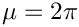.
- Explain why there are always two eigenvalues with the values 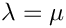. What are the corresponding eigenfunctions?
- When the output is a complex conjugate pair of eigenvalues, the two associated eigenvectors are the real and imaginary parts of the eigenvector corresponding to the first eigenvalue. The complex conjugate eigenvalue has a complex conjugate eigenvector (can you prove this?), so no more information is required. Modify the output function to examine the real and imaginary parts of a complex eigenvalue. Are the results what you expect?
Source files for this tutorial
- The source files for this tutorial are located in the directory:
demo_drivers/eigenproblems/harmonic/ - The driver code is:
demo_drivers/eigenproblems/harmonic/harmonic.cc
PDF file
A pdf version of this document is available.